¿Quiénes somos?
"Somos un grupo de apasionados por la vida animal que decidio dejar de ser espectador para convertirse en actor del cambio. En Patitas Felices, cada rescate es un compromiso de por vida."
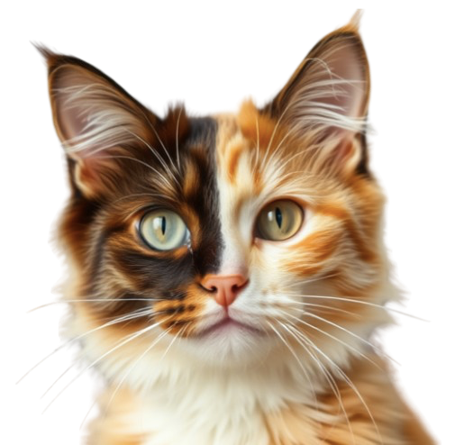

Somos el puente entre un pasado dificil y un futuro lleno de amor. Cada colita moviendose es una vida transformada.
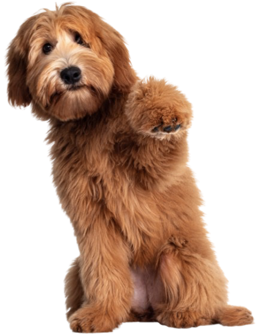
Mascotas buscando hogar
Familias unidas este 2026
Peluditos rescatados


"Somos un grupo de apasionados por la vida animal que decidio dejar de ser espectador para convertirse en actor del cambio. En Patitas Felices, cada rescate es un compromiso de por vida."

Respondemos a cada llamado de auxilio, rescatando animales en situación de vulnerabilidad las 24/7.
Brindamos atención veterinaria, rehabilitación y mucho cariño para recuperar su salud y confianza.
Encontramos familias responsables que ofrezcan amor eterno y un hogar seguro.
Educamos sobre tenencia responsable y el respeto hacia todos los seres vivos.
"Nuestros pasos dejan marca"
Un futuro donde ningún animal sea abandonado en las calles.
Generaciones conscientes del respeto hacia los animales.
Una comunidad unida protegiendo a quienes no tienen voz.
Ser referentes en bienestar animal a nivel nacional.
"Momentos que marcan la diferencia y eventos para unirnos."
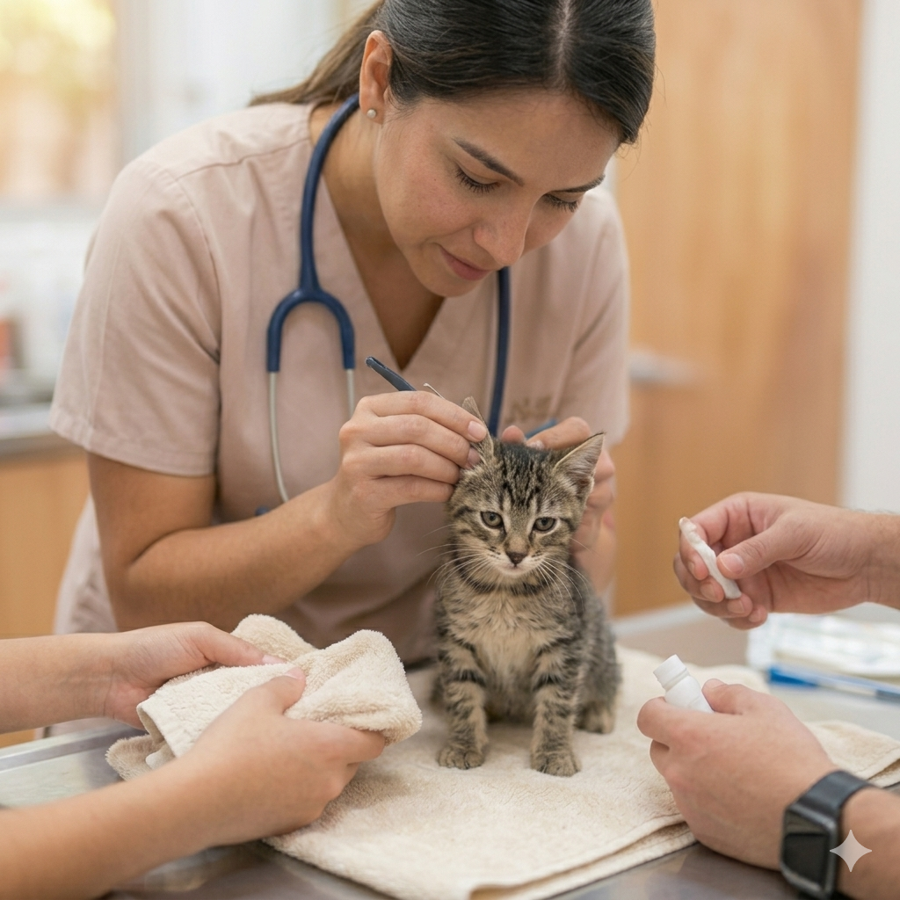
Fecha: 26 de Abril - Parque Provenza.
Descripcion: Nuestros especialistas estaran brindando
chequeos generales y cuidados basicos. Tu puedes ser voluntario ayudandonos a cepillarlos y darles
mucho cariño mientras reciben su revision.
¡Te esperamos!
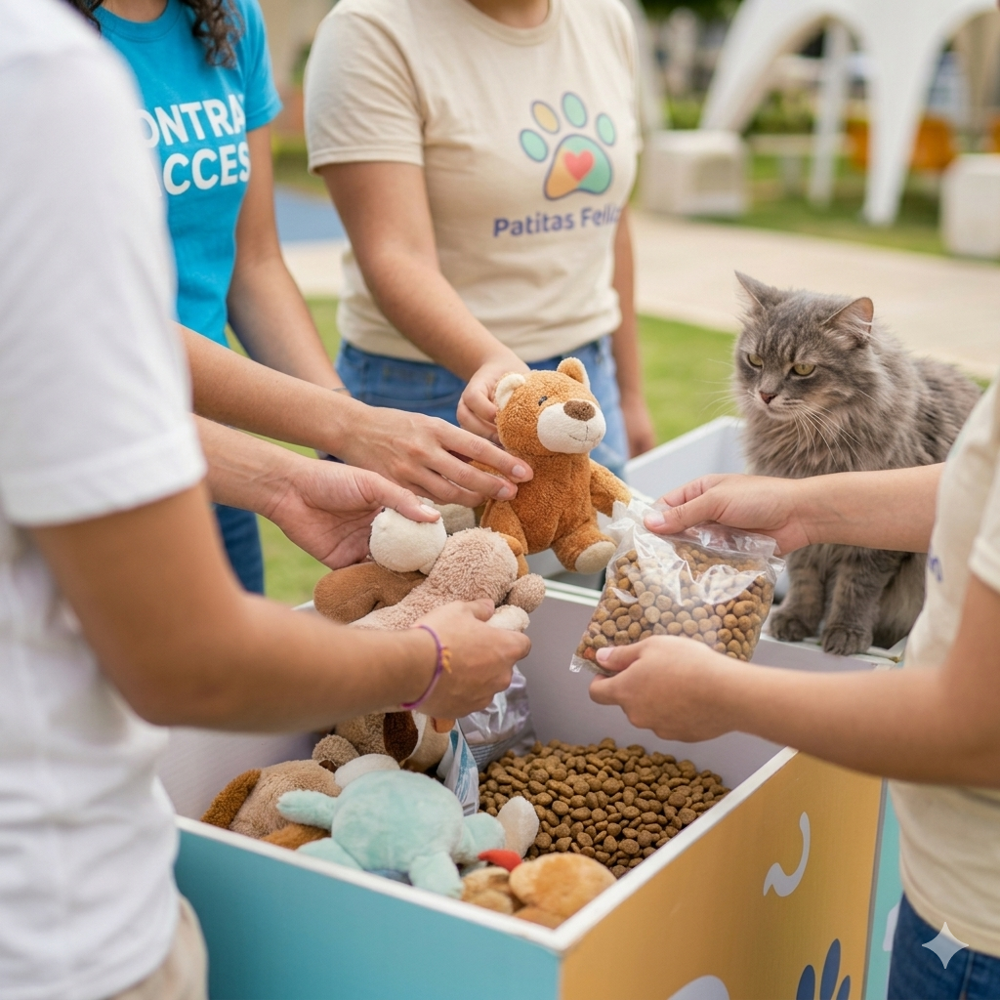
Fecha:25 de Abril - Parque San Pio.
Descripcion: Recolectaremos alimento, cobijas y medicinas
para nuestros nuevos rescatados.
¡Te esperamos!
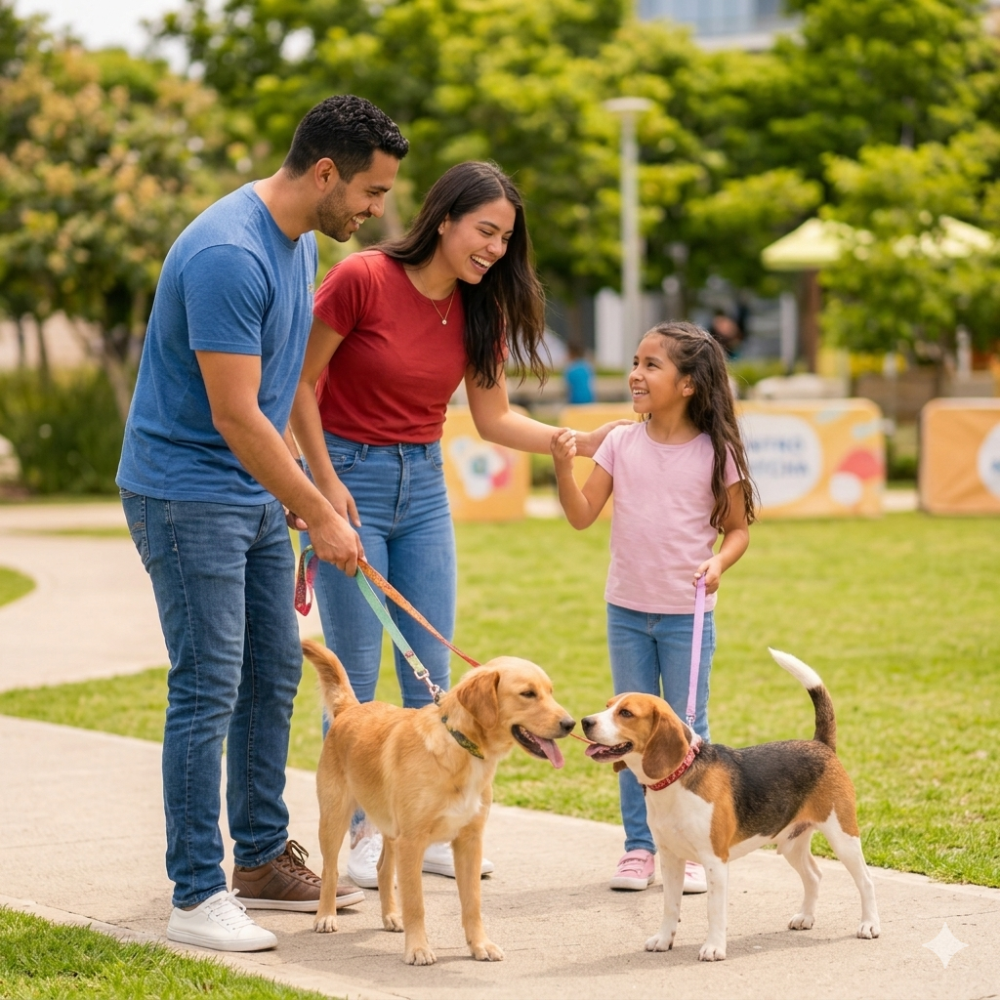
Fecha: 9 de Mayo - Centro Comercial Cacique.
Descripcion: ¡Es el dia de encontrar el match
perfecto! Ven con tu familia a conocer a los perritos y gaticos que estan listos para llenar tu
hogar de alegria y travesuras.
¡Te esperamos!

Cada uno tiene una historia,
solo les falta un hogar para empezar un nuevo capítulo.
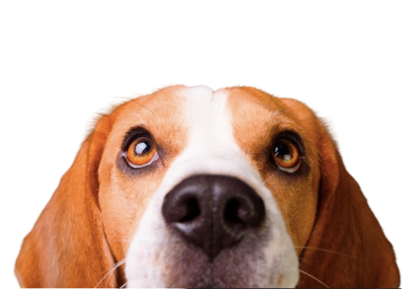

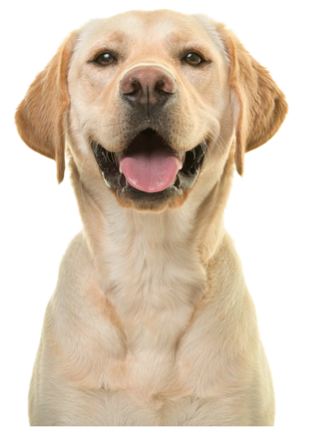
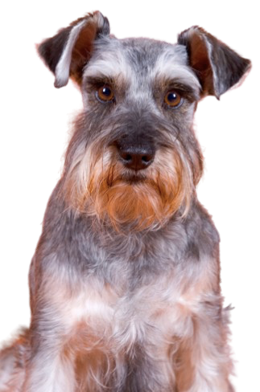
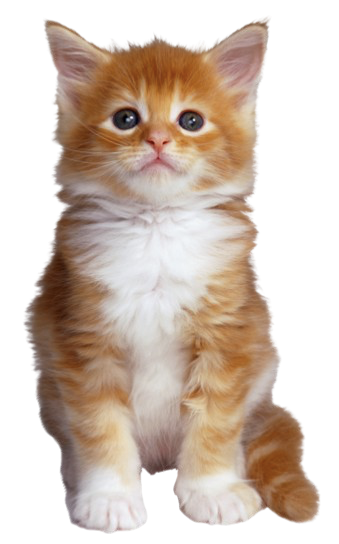
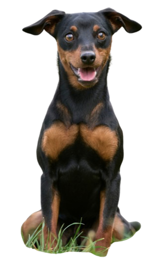
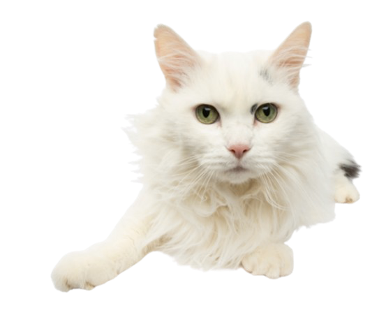
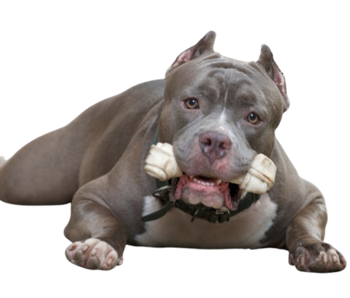
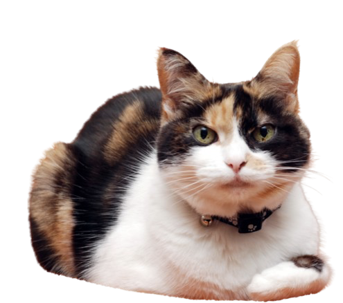

"Mucha gente busca cachorros, pero yo decidi darle una oportunidad a un perro adulto. Toby es la
calma de mi casa, es super agradecido y educado. ¡Gracias Patitas Felices!"
⭐⭐⭐⭐⭐
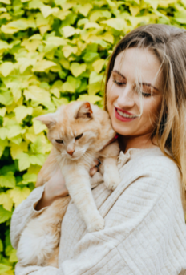
"Adoptar a Simba fue la mejor decision. El proceso fue super claro y el equipo de la fundacion me dio
todos los tips para que se adaptara rapido a mi apartamento. ¡Ahora somos inseparables!"
⭐⭐⭐⭐

"Buscabamos una gatita que fuera paciente con nuestros hijos y Luna fue el 'match' perfecto. Ver a
los niños aprender sobre responsabilidad y amor animal no tiene precio."
⭐⭐⭐⭐⭐
"Dejanos tus datos y nos pondremos en contacto contigo pronto. ¡Cada mensaje es un paso mas hacia un final feliz!"